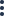

<div class="card percent-cards">
  <div class="absolute-right">
      <div class="drop-menu">
          
          <div class="popover">
              <button (click)="editItem({})" class="item">
                <span class="no-margin label-menu">Editar</span>
                <ion-icon class="no-margin icon-menu" name="create-outline"></ion-icon>
            </button>
              <button (click)="deleteItem({})" class="item">
                <span class="no-margin label-menu">Eliminar</span>
                <ion-icon class="no-margin icon-menu" name="trash-outline"></ion-icon>
            </button>
          </div>
      </div>
  </div>
  <!-- usar clase up-trending si es para incremento y low-trending si es para decremento -->
  <div class="top-percent up-trending">
      <!-- Icono para incremento -->
      <ion-icon class="icon-top-percent" name="trending-up"></ion-icon>
      <!-- Icono para decremento -->
      <!-- <ion-icon name="trending-down"></ion-icon> -->
      <span class="label-top-percent">Incremento</span>
  </div>
  <div class="percent">
      50%
  </div>
  <div class="title-percent">
      Ventas de proyectos ASEI
  </div>
  <div class="description-percent">
      Pequeña descripcion del indicadores estatico
  </div>
</div>
